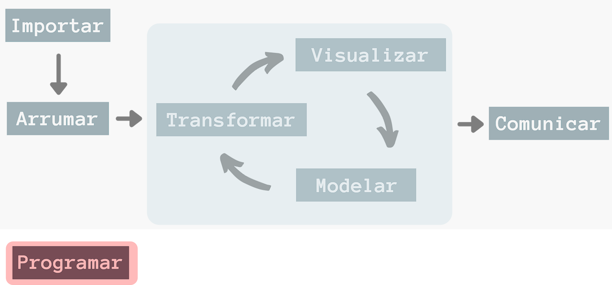
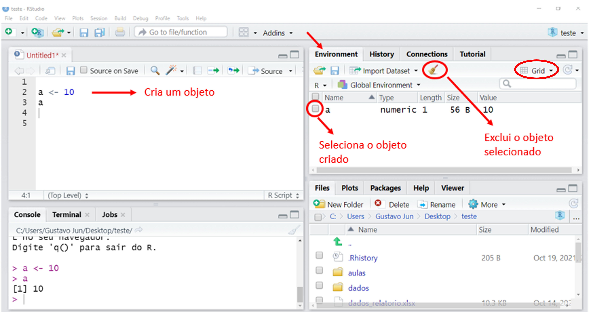
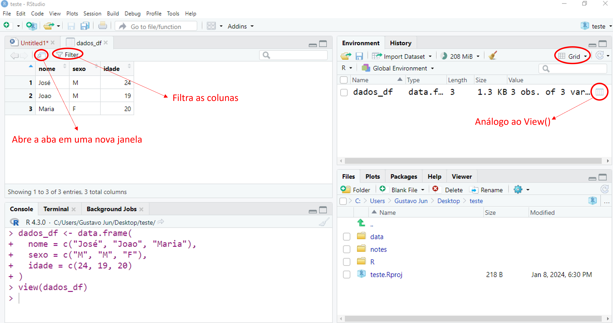

3 Noções básicas em R
3.1 Introdução
Para trabalhar com ciência de dados em R, devemos ter algumas noções básicas de programação nessa linguagem. Os conceitos discutidos neste capítulo serão a base para aplicarmos as demais ferramentas ao longo da apostila.
3.2 Operações matemáticas
A Tabela 3.1 lista as principais operações matemáticas presentes no R, seguida de exemplos.
| Operação | Símbolo |
|---|---|
| Adição | + |
| Subtração | - |
| Multiplicação | * |
| Divisão | / |
| Potência |
^ ou **
|
| Raiz quadrada |
^(1/2) ou sqrt()
|
| Resto da divisão | %% |
| Parte inteira da divisão | %/% |
# Adição
1 + 1.2
#> [1] 2.2# Subtração
2 - 1
#> [1] 1# Multiplicação
5 * 5
#> [1] 25# Divisão
6 / 4
#> [1] 1.5# Potência
2 ^ 3
#> [1] 8
2 ** 3
#> [1] 8# Raiz quadrada
4 ^ (1/2)
#> [1] 2
sqrt(4)
#> [1] 2# Resto da divisão
7 %% 3
#> [1] 1# Parte inteira de uma divisão
7 %/% 3
#> [1] 2Assim como na matemática, o R segue a ordem de precedência de sinais, calculando primeiro a multiplicação e divisão, além dos valores entre parênteses, para, posteriormente, calcular a adição e a subtração.
1 + 2 * 5 - (4 - 2) / 2
#> [1] 10Outra informação relevante quando tratamos de números no R é que os decimais são delimitados por ponto (.) e não por vírgula. Essa informação é importante para que possamos escrever números decimais da maneira a qual o R aceita.
# Separador decimal correto
10.5
# Separador decimal incorreto
10,5
#> Error: <text>:5:3: ',' inesperado
#> 4: # Separador decimal incorreto
#> 5: 10,
#> ^Uma função útil para tratar de números decimais é a round(). Ela arredonda valores de acordo com o número de casas decimais informadas no argumento digits.
round(10.456783452, digits = 1)
#> [1] 10.5Abordaremos com mais detalhes as funções na Seção 3.4.
3.3 Objetos
Objetos são nomes que recebem e salvam um determinado valor, comando ou código. Para criar um objeto, utilizamos o operador <-, cujo atalho no teclado é Alt + -.
No exemplo a seguir, salvaremos o valor 10 dentro do nome a.
a <- 10Ao rodar o objeto a, o R retorna o valor 10.
a
#> [1] 10Uma vez que temos o valor 10 salvo no nome a, podemos utilizá-lo da seguinte maneira:
a + 4
#> [1] 14Ou seja, o valor 10, salvo no objeto de nome a, é somado ao valor 4, resultando em 14.
A janela Enviroment armazena e indica todos os objetos criados. Caso queira excluir um ou mais objetos, selecione-os e clique no ícone da vassoura (Habilite o modo de apresentação Grid, caso o modo List esteja ativado).

Devemos nos atentar a alguns detalhes ao criarmos um objeto. Primeiramente, o R diferencia letras maiúsculas e minúsculas.
a <- 10
a
#> [1] 10A <- 50
A
#> [1] 50Além disso, existem nomes de sintaxe inválida, ou seja, não podemos nomear um objeto começando por números, underline (_), ponto (.) e traço (-) ou com espaço entre nomes compostos.
# Nomes não permitidos!
1objeto <- 1
_objeto <- 2
-objeto <- 3
nomear-objeto <- 4
.objeto <- 5
nomear objeto <- 6Contudo, podemos utilizar números, underline e pontos, desde que não estejam no início do nome.
# Permitido
objeto1 <- 7
nomear_objeto <- 25
nomear.objeto <- 52Também não é recomendado nomear objetos com nomes de pacotes e funções já existentes, pois podem gerar conflitos.
# Não dê nomes do tipo:
tidyverse <- 31
mean <- "a"Por fim, ao escolher um nome para um objeto, tenha em mente que este deve ser conciso, porém claro quanto ao seu significado.
Neste primeiro momento, criamos objetos que recebem um único valor. Ao longo da apostila, criaremos objetos mais complexos e diversos, como os vetores, data frames e listas, os quais trataremos ao longo deste capítulo.
3.4 Funções
As funções são nomes que guardam um código em R. Portanto, cada função apresenta certas ferramentas específicas que nos trazem alguma resposta.
Como exemplo, utilizaremos a função sum(), que soma os valores indicados.
sum(1, 2, 10)
#> [1] 13Dentro dos parênteses de uma função estão os argumentos. Estes argumentos são separados por vírgulas e não há um limite de argumentos que uma função pode receber. Por tanto, uma função executa determinado comando, em resposta aos argumentos especificados dentro dela.
No exemplo, 1, 2 e 10 são argumentos da função sum(). Portanto, a função sum() realizou a operação de soma dos argumentos especificados dentro dela, retornando o resultado da operação, igual a 13.
Alguns argumentos de funções possuem nomenclaturas específicas, que podemos ou não explicitar em uma função. Utilizaremos como exemplo a função seq().
seq(from = 2, to = 10, by = 2)
#> [1] 2 4 6 8 10A função seq() cria uma sequência numérica de acordo com os argumentos indicados. O from = indica por qual número se inicia a sequência, o to =, em qual número termina e o by =, de quanto em quanto a sequência será construída. Assim, no exemplo, criamos uma sequência que começa do 2, termina no 10 e que vai de 2 em 2.
Temos a possibilidade de não explicitar os nomes dos argumentos, desde que se respeite a ordem em que os argumentos aparecem.
seq(2, 10, 2)
#> [1] 2 4 6 8 10Para saber qual a ordem dos argumentos da função seq(), acessamos a sua documentação com o comando help(seq).
Caso seja explicitado o nome dos argumentos, a ordem não interfere no resultado final.
seq(by = 2, from = 2, to = 10)
#> [1] 2 4 6 8 10Mas caso os nomes não sejam explicitados, a ordem incorreta gera outro resultado.
seq(2, 2, 10)
#> [1] 2Da mesma forma como salvamos um único valor em um objeto (Seção 3.3), também podemos salvar o resultado de uma função. No exemplo a seguir, guardaremos o resultado da sequência numérica em um objeto de nome sequencia_numerica.
sequencia_numerica <- seq(from = 2, to = 10, by = 2)
sequencia_numerica
#> [1] 2 4 6 8 10As funções serão a base para realizarmos cada etapa do fluxograma da ciência de dados, assim, nos depararemos com diversas funções e argumentos específicos ao longo dos processos.
3.5 Classes
As classes de objetos nos indicam qual o tipo de valor que está armazenado em um determinado objeto. São divididas em quatro principais tipos:
numeric: apresenta valores numéricos, sejam inteiros (integer) ou decimais (double);
character: valores do tipo caractere. Também podemos chamá-los de valores do tipo texto ou string, nome mais comum no meio da programação;
factor: apresentam variáveis qualitativas possíveis de serem agrupadas em categorias. Veremos com mais detalhes na Seção 3.7;
logical: valores lógicos do tipo verdadeiro ou falso (TRUE/FALSE). Também são conhecidos como valores booleanos. Abordaremos mais detalhadamente esta classe na Seção 3.8.
Para verificarmos a classe de um objeto, utilizamos a função class(), tendo como argumento o nome do objeto. Vejamos alguns exemplos a seguir.
a <- 10
class(a)
#> [1] "numeric"b <- "a"
class(b)
#> [1] "character"Para criarmos um objeto com a classe do tipo caractere, devemos escrevê-lo entre aspas "". As aspas servem para diferenciar nomes (objetos, funções e pacotes) de textos (letras e palavras).
No exemplo anterior, perceba que na classe numérica criamos um objeto de nome a que recebe o valor 10, enquanto que na classe caractere, criamos um objeto de nome b que recebe o texto "a".
Portanto, de modo conciso: no primeiro caso, criamos um objeto chamado a, enquanto no outro exemplo, criamos um objeto que contém o caractere "a".
Conhecer a classe de objetos e valores é importante para definirmos os procedimentos e operações possíveis de serem realizadas. Por exemplo, podemos realizar uma operação matemática com números, porém não podemos realizar com caracteres.
10 + 10
#> [1] 20"a" + "b"
#> Error in "a" + "b": argumento não-numérico para operador binário
"1" + "1"
#> Error in "1" + "1": argumento não-numérico para operador binárioNo último exemplo, perceba que os números "1" foram escritos entre aspas, logo passam a serem tratados como caracteres.
class("1")
#> [1] "character"Por este motivo não conseguimos realizar a operação de soma.
3.6 Vetores
O vetor é um conjunto de valores sequenciais agrupados. Para criarmos um vetor, devemos utilizar a função c(), cujos argumentos devem estar separados por vírgulas.
c(2, 6, -10, 14, 18.3, 22)
#> [1] 2.0 6.0 -10.0 14.0 18.3 22.0c("a", "f", "c")
#> [1] "a" "f" "c"Da mesma maneira vista na Seção 3.3, podemos salvar um comando em um objeto. Agora, guardaremos um vetor.
A função length() traz a quantidades de elementos que o vetor apresenta. O objeto vetor_numerico apresenta seis elementos e o vetor_texto, três.
Com a função class(), verificamos a classe dos elementos presentes nos vetores.
Contudo, um vetor só pode guardar um tipo de classe. Caso misturemos um vetor com números e caracteres, os números serão convertidos para texto. Esse comportamento é conhecido como coerção.
Os números 1 e 5, dentro de um vetor que contém o caractere "a", são convertidos para texto, resultando em um vetor com os textos "1", "5" e "a", como constatado ao utilizar a função class(), que nos retorna uma classe do tipo caractere.
Portanto, devemos ter em mente que, para vetores com valores de classes diferentes, os caracteres serão dominantes em relação aos números.
Para criar um conjunto de valores com classes diferentes, devemos criar uma lista, assunto que veremos mais adiante na Seção 3.11.
Podemos criar um vetor com uma sequência de números interios utilizando o operador :.
sequencia_numerica <- 1:4
sequencia_numerica
#> [1] 1 2 3 4Além disso, podemos utilizar objetos que guardam um vetor dentro de funções. Como exemplo, utilizaremos a função sum() para somar os valores contidos no vetor sequencia_numerica.
sum(sequencia_numerica)
#> [1] 10Ao criarmos um vetor, cada elemento ocupa uma posição dentro dele. A posição é dada pela ordem em que estão declarados no vetor, começando pela posição de número 1.
A operação que encontra valores em um vetor de acordo com sua posição é conhecida por subsetting.
Para isso, logo após o nome do objeto que desejamos analisar, colocamos o número da posição dentro de colchetes [].
posicao_vetor <- c(11, 22, 33, 44)
posicao_vetor
#> [1] 11 22 33 44
posicao_vetor[1]
#> [1] 11
posicao_vetor[2]
#> [1] 22
posicao_vetor[3]
#> [1] 33
posicao_vetor[4]
#> [1] 44
posicao_vetor[5]
#> [1] NAO objeto de nome posicao_vetor é um vetor com 4 valores. Com o comando posicao_vetor[1], temos o valor 11, contido na primeira posição do vetor, seguindo a mesma lógica para as demais posições.
Perceba que o comando posicao_vetor[5] nos retorna o valor NA, pois não existe esta posição dentro do vetor. Mais adiante, na Seção 3.9, trataremos sobre o valor NA.
Também podemos inserir um conjunto de posições dentro dos colchetes, o que nos retorna um subconjunto de valores dentro de um vetor. Para isso, utilizamos a função c(), tendo como argumentos as posições que se deseja acessar.
Partindo da lógica do subsetting, podemos substituir elementos de um vetor existente.
vetor_letras[4] <- "a"
vetor_letras
#> [1] "w" "x" "y" "a"No comando acima, trocamos a letra "z" do objeto vetor_letras pela letra "a". Primeiramente, selecionamos a posição em que se encontra a letra "z" com o comando vetor_letras[4]. Em seguida, atribuímos a letra "a", com o operador <-, à posição que se deseja substituir.
A mesma lógica vale para substituir mais de um elemento de um vetor.
Para acrescentar um elemento novo ao vetor, selecionamos uma nova posição e, em seguida, atribuímos o valor desejado.
vetor_letras[5] <- "m"
vetor_letras
#> [1] "b" "x" "q" "a" "m"Também é possível realizar operações matemáticas com vetores de classe numérica.
vetor_valor <- c(8, 19, 24, 25)
vetor_valor + 1
#> [1] 9 20 25 26
vetor_valor - 1
#> [1] 7 18 23 24
vetor_valor / 2
#> [1] 4.0 9.5 12.0 12.5
vetor_valor * 2
#> [1] 16 38 48 50
vetor_valor ^ 2
#> [1] 64 361 576 625Perceba que as operações matemáticas são executadas para cada um dos elementos do vetor.
Também podemos fazer operações entre vetores:
Para realizar a operação, ambos os vetores são alinhados, sendo somados os valores de acordo com a posição correlata entre os elementos dos vetores. Portanto, o elemento que oculpa a primeira posição no vetor1 é somado com o primeiro elemento do vetor2, seguindo a mesma lógica para os demais elementos.
No caso de vetores com tamanhos diferentes, ocorre o processo de reciclagem.
A operação entre vetores de tamanhos diferentes segue a mesma lógica citada anteriormente: ambos os vetores são alinhados, porém, por apresentarem diferentes dimensões, é realizada uma repetição (reciclagem) do vetor3 para que esse fique com o mesmo tamanho do vetor4, assim, possibilitando a operação matemática. Portanto, é como se o vetor3 tivesse a dimensão de c(1, 3, 1, 3).
Vale destacar que o comportamento de reciclagem foi aplicado quando fizemos as operações matemáticas em um só vetor. Por exemplo, quando somamos 1 ao vetor de dimensão c(8, 19, 24, 25), o R reciclou o número 1 (que nada mais é do que um vetor de tamanho 1, igual a c(1)) formando um vetor c(1, 1, 1, 1) para que fosse possível realizar a soma.
Até então, fizemos operações entre vetores com comprimentos múltiplos entre si. Ao realizar operações entre vetores cujos tamanhos não são múltiplos, a reciclagem atua da seguinte maneira.
Nessa situação, foi realizada a reciclagem do vetor5 até que ele adquirisse a mesma dimensão do vetor6. Assim, o vetor5 se apresenta da seguinte maneira após a reciclagem: c(1, 2, 3, 1, 2). Perceba que o último valor do vetor5 não foi reciclado na operação, pois sua presença na reciclagem ultrapassaria a dimensão do vetor6.
Normalmente, esse tipo de operação não é desejado devido a não reciclagem de certos valores de um vetor, o que pode causar problemas de inconsistências. E, justamente, por ser um processo incomum, o R gera uma mensagem de aviso (warning) no console, alertando o ocorrido.
Guarde com carinho os conceitos explicados nesta seção, pois os utilizaremos com muita frequência nos próximos capítulos, principalmente na Seção 3.12 que trata sobre os data frames.
3.7 Fatores
As variáveis do tipo fator são um caso especial de classe de objetos que representam variáveis qualitativas possíveis de serem agrupadas em categorias, como, por exemplo, o sexo e grau de escolaridade.
As categorias presentes em um fator são indicadas pelo atributo levels, como os masculino e feminino, no caso do sexo, e ensino fundamental, médio e superior, no caso do grau de escolaridade.
Normalmente, este tipo de variável é criada ou importada como texto, sendo necessário transformá-la em fator. Para isso, utilizamos a função as.factor().
as.factor(sexo)
#> [1] F F M F M M
#> Levels: F MCriando o objeto sexo, sendo os argumentos F para o sexo feminino e M para o masculino, temos um vetor do tipo caractere. Como o sexo é uma variável possível de ser categorizada, transformamos essa variável para a classe fator, a partir da função as.factor(), sendo criados os levels F e M.
Ainda, podemos criar diretamente um vetor do tipo fator utilizando a função factor().
Por padrão, os levels são ordenados por ordem alfabética. No exemplo anterior, a categoria F vem antes da M. Para reordená-las, utilizamos o argumento levels na função factor(), ordenando as categorias de acordo com sua posição no vetor.
Em outro exemplo, agora com o grau de escolaridade, também se trata de variáveis categorizáveis, portanto, do tipo fator. Porém, são categorias possíveis de serem ordenadas a partir de um critério, como por exemplo, do menor grau de escolaridade ao maior. Para criar esta ordenação, declaramos o argumento ordered = TRUE dentro da função factor().
O vetor escolaridade apresenta informações do nível de escolaridade, cujas categorias são não escolarizado (NE), ensino fundamental (EF), ensino médio (EM) e ensino superior (ES).
Semelhante ao realizado nos exemplos anteriores, utilizamos a função factor() para criar o vetor do tipo fator, definimos as categorias no argumento levels = e, com o ordered = TRUE, indicamos que as categorias são ordenadas de acordo com a ordem estabelecida em levels =.
Note que o resultado nos trouxe níveis ordenados Levels: NE < EF < EM < ES e uma classe do tipo "ordered" "factor", ou seja, um classe do tipo fator ordenado.
3.7.1 Diferenças entre fatores e caracteres
Apesar dos objetos do tipo fator serem representados por letras ou palavras, o R os enxerga como números inteiros, diferentemente dos objetos da classe caractere, que são puramente textos. Podemos notar essas diferenças ao tentar convertê-las em classe numérica com a função as.numeric().
sexo <- c("F", "F", "M", "F", "M", "M")
class(sexo)
#> [1] "character"
as.numeric(sexo)
#> [1] NA NA NA NA NA NAsexo_fator <- factor(c("F", "F", "M", "F", "M", "M"))
class(sexo_fator)
#> [1] "factor"
as.numeric(sexo_fator)
#> [1] 1 1 2 1 2 2Podemos notar que não foi possível converter o vetor do tipo caractere para um vetor numérico, pois o R não consegue atribuir uma classificação numérica para textos. Porém, no caso do vetor tipo fator, foi possível transformá-lo em um tipo numérico, sendo representado como 1 o nível F e como 2, o nível M.
Portanto, para o R, os levels dos fatores são números inteiros sequenciais, começando do 1, atribuídos conforme a ordem dos argumentos estabelecidos no vetor. Isso facilita a utilização de variáveis de classe fator em modelos estatísticos, uma vez que as variáveis já estão codificadas como números.
3.8 Operações lógicas
As operações lógicas nos retornam valores do tipo verdadeiro ou falso, representados no R por TRUE e FALSE (em letras maiúsculas), respectivamente. Dessa forma, a classe atribuida a estes tipos de valores é a logical, aceitando somente estes dois valores.
Também podemos abreviá-los por suas iniciais T e F.
Contudo, recomenda-se utilizar a forma completa de seus nomes para deixar o código mais claro e evitar conflitos, caso um objeto seja nomeado com tais letras.
Da mesma forma que os fatores, os operadores lógicos são codificados por números, sendo 1 atribuído ao TRUE e 0 ao FALSE.
as.numeric(TRUE)
#> [1] 1
as.numeric(FALSE)
#> [1] 0Para aplicarmos testes lógicos, ou seja, comparações entre valores, podemos utilizar o operador == para verificar se dois valores são iguais, ou o operador != para ver se os valores são diferentes.
# Resultados verdadeiros (TRUE)
52 == 52
#> [1] TRUE
"x" == "x"
#> [1] TRUE
"a" != "b"
#> [1] TRUE
1 != 2
#> [1] TRUE# Resultados falsos (FALSE)
52 != 52
#> [1] FALSE
"x" != "x"
#> [1] FALSE
"a" == "b"
#> [1] FALSE
1 == 2
#> [1] FALSEAlém disso, podemos utilizar outros operadores lógicos, como por exemplo:
<se um valor é menor que o outro;>se um valor é maior que o outro;<=se um valor é menor ou igual que o outro;>=se um valor é maior ou igual que o outro.
# Menor
3 < 5
#> [1] TRUE
3 < 2
#> [1] FALSE# Maior
3 > 1
#> [1] TRUE
4 > 7
#> [1] FALSE# Menor ou igual
3 <= 3
#> [1] TRUE
2 <= 1
#> [1] FALSE# Maior ou igual
10 >= 5
#> [1] TRUE
1 >= 6
#> [1] FALSEO operador %in% verifica se um dado valor pertence a um vetor, ou seja, se um valor está contido dentro de um conjunto de valores.
No último exemplo, testamos se os elementos "y" e "a" estão presentes no vetor c("x", "y"). Como resultado, temos que "y" está contido no vetor (TRUE) e "a", não (FALSE), independentemente da posição em que se encontram declarados.
A Tabela 3.2 traz um resumo dos principais operadores lógicos.
| Operador | Sintaxe | Teste |
|---|---|---|
== |
a == b |
a é igual a b? |
!= |
a != b |
a é diferente de b? |
> |
a > b |
a é maior que b? |
>= |
a >= b |
a é maior ou igual a b? |
< |
a < b |
a é menor que b? |
<= |
a <= b |
a é menor ou igual a b? |
%in% |
a %in% c(a, b, c) |
a está presente em c(a, b, c)? |
Tratando dos vetores e operações lógicas, observe o seguinte exemplo.
vet <- c(1, 0, 6, -9, 10, 52, 3)
vet > 3
#> [1] FALSE FALSE TRUE FALSE TRUE TRUE FALSE
vet[vet > 3]
#> [1] 6 10 52Aqui teremos que relembrar alguns conceitos expostos anteriormente.
Primeiramente, criamos um vetor de nome vet, que recebe 7 valores. Posteriormente, utilizamos um teste lógico para verificar quais valores de vet são maiores que 3, cuja resposta é dada por TRUE ou FALSE.
Nessa situação, ocorre uma reciclagem (Seção 3.6) do valor 3, portanto, resultando em um vetor igual a c(3, 3, 3, 3, 3, 3, 3).
A partir disso, o R alinha o vetor c(1, 0, 6, -9, 10, 52, 3) com o vetor c(3, 3, 3, 3, 3, 3, 3) e testa a lógica proposta, elemento por elemento (1 > 3, 0 > 3, 6 > 3, -9 > 3, 10 > 3, 52 > 3 e 3 > 3), formando um vetor de verdadeiros e falsos.
Toda essa explicação embasa a operação lógica vet[vet > 3], que nos retorna apenas os valores do vetor que são maiores que 3, ou seja, todos os valores iguais a TRUE.
Esse tipo de operação será muito utilizado nos capítulos seguintes, mais especificamente no Capítulo 7 ao utilizarmos a função dplyr::filter(), essa muito mais simples de operar do que em relação ao apresentado anteriormente, porém seguindo a mesma lógica.
3.9 Valores especiais
Nesta seção, explicaremos alguns valores particulares presentes no R.
3.9.1 NA
O NA (not available) representa a ausência de informação, ou seja, a informação existe, porém não se sabe qual é.
Podemos exemplificar o significado de NA com uma coleta de dados em que certos indivíduos não informaram suas idades. Isso não significa que os entrevistados não possuem idade, mas que o registro de algumas idades é uma informação ausente na pesquisa.
idade_jose <- 24
idade_joao <- NA
idade_maria <- NASabendo do significado de NA, podemos aprofundar sua utilização em testes lógicos.
idade_jose == idade_joao
#> [1] NA
idade_joao == idade_maria
#> [1] NAConhecemos apenas a idade do José e não sabemos a idade do João e da Maria, logo, a idade dos dois últimos são representados pelo valor NA.
Ao aplicar o teste lógico idade_jose == idade_joao, o resultado é o valor NA, ou seja, o R não sabe responder se a idade do José é a mesma de João, uma vez que a idade do João não foi informada.
No teste idade_joao == idade_maria, também nos é retornado o valor NA, pois ambas as idades não foram informadas, logo tanto a idade do João pode ser a mesma da Maria, como pode ser diferente. Assim, o R não tentará adivinhar uma resposta e simplesmente responderá: NA - com base nas informações disponíveis, não é possível ter uma resposta concreta.
Também podemos utilizar testes lógicos com a função is.na(), que verifica a presença ou ausência de NA em objetos.
Dessa forma, em conjuntos de dados, é comum que algumas informações não tenham registro, sendo assim representadas pelo valor NA. Com isso, devemos saber interpretar e tratar estes valores.
Em algumas operações, como a média (mean()), não conseguimos executá-la na presença desses valores.
No caso da função mean(), ela possui o argumento na.rm = TRUE para excluir os NA da operação matemática.
mean(vetor_ausente, na.rm = TRUE)
#> [1] 2Todavia, algumas outras funções não possuem um argumento semelhante, sendo necessário realizar outras manipulações de dados, as quais veremos no Capítulo 7.
3.9.2 NaN
O NaN (not a number) representa indeterminações matemáticas.
0/0
#> [1] NaN
log(-1)
#> [1] NaNTambém podemos utilizar testes lógicos com a função is.nan().
is.nan(0/0)
#> [1] TRUE3.9.3 Inf
O Inf (infinite) representa um valor muito grande, o qual o R não consegue retratar.
100 ^ 200
#> [1] InfE também pode representar um limite matemático.
1 / 0
#> [1] Inf
-1 / 0
#> [1] -InfNovamente, podemos utilizar testes lógicos para identificar se um objeto apresenta valor infinito. Para isso, utilizamos a função is.infinite().
is.infinite(1 / 0)
#> [1] TRUEPara valores testar valores finitos, utilizamos a função is.finite().
is.finite(1 / 0)
#> [1] FALSE3.9.4 NULL
O NULL representa a ausência de um objeto. Seu significado está mais atrelado a lógica de programação, quando não queremos atribuir valor à um objeto. Portanto, diferentemente do NA, o NULL indica a inexistência de um parâmetro qualquer.
valor_nulo <- NULL
valor_nulo
#> NULLPara utilizar teste lógico à valores nulos, utilizamos a função is.null().
is.null(valor_nulo)
#> [1] TRUE3.10 Data frames
O data frame é o objeto que armazena os dados criados ou importados para o R. São estruturados a partir de linhas e colunas, sendo que cada coluna representa uma variável e cada linha, uma observação, estrutura muito semelhante a uma planilha Excel.
PlantGrowth
#> weight group
#> 1 4.17 ctrl
#> 2 5.58 ctrl
#> 3 5.18 ctrl
#> 4 6.11 ctrl
#> 5 4.50 ctrl
#> 6 4.61 ctrl
#> 7 5.17 ctrl
#> 8 4.53 ctrl
#> 9 5.33 ctrl
#> 10 5.14 ctrl
#> 11 4.81 trt1
#> 12 4.17 trt1
#> 13 4.41 trt1
#> 14 3.59 trt1
#> 15 5.87 trt1
#> 16 3.83 trt1
#> 17 6.03 trt1
#> 18 4.89 trt1
#> 19 4.32 trt1
#> 20 4.69 trt1
#> 21 6.31 trt2
#> 22 5.12 trt2
#> 23 5.54 trt2
#> 24 5.50 trt2
#> 25 5.37 trt2
#> 26 5.29 trt2
#> 27 4.92 trt2
#> 28 6.15 trt2
#> 29 5.80 trt2
#> 30 5.26 trt2O data frame PlantGrowth é nativo do R e contém dados sobre o crescimento de plantas sob 2 tipos diferentes de tratamentos, além do controle (mais informações em ?PlantGrowth). Possui 30 linhas (observações) e 2 colunas (variáveis).
Portanto, podemos dizer que o objeto de nome PlantGrowth guarda um data frame com 30 observações (ou linhas) e 2 variáveis (ou colunas).
Podemos aplicar algumas funções em data frames, a fim de visualizarmos melhor sua estrutura e elementos presentes. A seguir, demonstraremos algumas delas.
# Mostra as 6 primeiras linhas
head(PlantGrowth)
#> weight group
#> 1 4.17 ctrl
#> 2 5.58 ctrl
#> 3 5.18 ctrl
#> 4 6.11 ctrl
#> 5 4.50 ctrl
#> 6 4.61 ctrl# Mostra as 6 últimas linhas
tail(PlantGrowth)
#> weight group
#> 25 5.37 trt2
#> 26 5.29 trt2
#> 27 4.92 trt2
#> 28 6.15 trt2
#> 29 5.80 trt2
#> 30 5.26 trt2# Mostra as dimensões (nº de linhas x nº de coluna)
dim(PlantGrowth)
#> [1] 30 2# Mostra os nomes das variáveis (colunas)
names(PlantGrowth)
#> [1] "weight" "group"# Estrutura geral do data frame (tipo, dimensão e classes)
str(PlantGrowth)
#> 'data.frame': 30 obs. of 2 variables:
#> $ weight: num 4.17 5.58 5.18 6.11 4.5 4.61 5.17 4.53 5.33 5.14 ...
#> $ group : Factor w/ 3 levels "ctrl","trt1",..: 1 1 1 1 1 1 1 1 1 1 ...# Medidas-resumo
summary(PlantGrowth)
#> weight group
#> Min. :3.590 ctrl:10
#> 1st Qu.:4.550 trt1:10
#> Median :5.155 trt2:10
#> Mean :5.073
#> 3rd Qu.:5.530
#> Max. :6.310Também podemos criar um data frame dentro do R com a função data.frame().
dados_df <- data.frame(
nome = c("José", "Joao", "Maria"),
sexo = c("M", "M", "F"),
idade = c(24, 19, 20)
)
dados_df
#> nome sexo idade
#> 1 José M 24
#> 2 Joao M 19
#> 3 Maria F 20Dentro da função, designamos nomes para as colunas (nome, sexo e idade), seguidos dos vetores com as observações.
Outra função útil quando trabalhamos com data frames é a View(). Ela nos dá uma visão ampliada e interativa dos dados ao abrir uma nova aba na janela do script.
View(dados_df)

Na nova aba, ilustrada na Figura 3.3, podemos filtrar as colunas de acordo com alguma especificação. Clicando no nome das colunas, pode-se ordenar as observações alfabética ou numericamente. Ao lado do ícone de filtrar, podemos abrir esta aba em uma nova janela, sendo muito útil para utilizá-la em uma segunda tela.
Outra forma de abrir a opção View() é clicando no ícone ao lado do objeto criado na janela Environment, quando selecionado o modo de apresentação Grid da mesma janela.
Os data frames serão o nosso principal objeto de estudo para aplicarmos ciência de dados, uma vez que guardam os dados a serem analisados. Estudaremos os data frames com mais detalhes na Seção 3.12. Já no Capítulo 4 veremos como importar dados para o R, transformando-os em data frames. Mas antes, trataremos das listas, assunto do tópico a seguir.
3.11 Listas
As listas são objetos semelhantes a um vetor, porém, com algumas diferenças. Como citado na Seção 3.6, não podemos misturar objetos de classes distintas em um mesmo vetor. Contudo, podemos realizar essa mescla de classes com as listas.
Para criarmos uma lista, utilizamos a função list(), tendo como argumentos os valores desejados.
Nesse caso, criamos uma lista com elementos de classes numérica, caractere e lógica, sem que ocorresse coerção, ou seja, não houve a conversão dos elementos do objeto para uma única classe, como vimos ocorrer com os vetores. Assim, as listas nos permite unir classes distintas em um mesmo objeto.
Outro diferencial é o fato de que cada elemento de uma lista também é uma lista. Portanto, para acessarmos um elemento de uma lista, devemos utilizar dois colchetes [[]].
Assim, utilizando um colchete, é retornado a classe da lista que contém um único elemento. Já com dois colchetes, nos é retornado a classe do elemento que está na lista, no caso do exemplo, a classe do elemento "x".
O fato de cada elemento ser uma lista dentro de uma lista é importante para podermos colocar vetores de tamanhos diferentes em cada posição. Isso faz das listas objetos muito flexíveis para armazenar dados.
Da mesma forma realizada com os data frames (Seção 3.10), podemos nomear cada posição de uma lista. Para isso, colocamos dentro da função list() os argumentos com as respectivas denominações e valores.
Quando a posição de uma lista possui um nome, podemos acessar seus valores com o operador $. Esse operador é equivalente a dados_alunos[[]].
# Equivalente a dados_estudantes[[1]]
dados_estudantes$nome
#> [1] "José" "Joao" "Maria"
# Equivalente a dados_estudantes[[2]]
dados_estudantes$sexo
#> [1] "M" "M" "F"
# Equivalente a dados_estudantes[[3]]
dados_estudantes$idade
#> [1] 24 19 203.12 Data frames e listas
A relação entre listas e data frames é que, basicamente, os data frames são um tipo de lista. Assim, as propriedades expostas sobre as listas se aplicam aos data frames.
Na Seção 3.10, apresentamos o básico sobre os data frames, exemplificado com o PlantGrowth. Assim, para entendermos a equivalência entre listas e data frames, converteremos o PlantGrowth em uma lista com a função as.list().
as.list(PlantGrowth)
#> $weight
#> [1] 4.17 5.58 5.18 6.11 4.50 4.61 5.17 4.53 5.33 5.14 4.81 4.17 4.41 3.59 5.87
#> [16] 3.83 6.03 4.89 4.32 4.69 6.31 5.12 5.54 5.50 5.37 5.29 4.92 6.15 5.80 5.26
#>
#> $group
#> [1] ctrl ctrl ctrl ctrl ctrl ctrl ctrl ctrl ctrl ctrl trt1 trt1 trt1 trt1 trt1
#> [16] trt1 trt1 trt1 trt1 trt1 trt2 trt2 trt2 trt2 trt2 trt2 trt2 trt2 trt2 trt2
#> Levels: ctrl trt1 trt2Perceba que os nomes das colunas do data frame se tornam o nome das posições de uma lista ($weight e $group) e cada um dos valores das colunas são convertidos em elementos da respectiva lista.
Portanto, podemos dizer que cada coluna de um data frame também é um data frame.
Dessa forma, podemos utilizar o operador $ para acessar os elementos de uma coluna, como fizemos para o nome das lista.
PlantGrowth$weight
#> [1] 4.17 5.58 5.18 6.11 4.50 4.61 5.17 4.53 5.33 5.14 4.81 4.17 4.41 3.59 5.87
#> [16] 3.83 6.03 4.89 4.32 4.69 6.31 5.12 5.54 5.50 5.37 5.29 4.92 6.15 5.80 5.26
PlantGrowth$group
#> [1] ctrl ctrl ctrl ctrl ctrl ctrl ctrl ctrl ctrl ctrl trt1 trt1 trt1 trt1 trt1
#> [16] trt1 trt1 trt1 trt1 trt1 trt2 trt2 trt2 trt2 trt2 trt2 trt2 trt2 trt2 trt2
#> Levels: ctrl trt1 trt2E com isso, conseguimos utilizá-las em funções.
mean(PlantGrowth$weight)
#> [1] 5.073Contudo, temos de destacar que todo data frame é um tipo de lista, porém nem toda lista é um data frame. Assim, o data frame possui algumas propriedades particulares que o tornam um tipo de lista especial:
Todas as colunas precisam ter a mesma dimensão, ou seja, ter o mesmo número de linhas;
Todas as colunas precisam ser nomeadas;
Possuir duas dimensões.
Essas propriedades nos indicam que um data frame tem que receber um conjunto de dados em formato retangular (análoga a uma planilha Excel), com o mesmo número de linhas (observações) em cada coluna (variável), sendo necessário a presença de um nome específico para cada uma das colunas.
Um exemplo da propriedade Todas as colunas precisam ter a mesma dimensão é a tentativa (falha) de converter uma lista com vetores de comprimentos diferentes em um data frame.
listas <- list(
1:5,
c("a", "b", "c"),
c(TRUE, FALSE, TRUE, FALSE)
)
as.data.frame(listas)
#> Error in (function (..., row.names = NULL, check.rows = FALSE, check.names = TRUE, : argumentos implicam em número de linhas distintos: 5, 3, 4A propriedade Todas as colunas precisam ser nomeadas não é um impeditivo para se criar um data frame, porém, não se obtém um bom resultado ao ignorá-la, uma vez que o R trata de designá-los de uma maneira pouco conveniente.
dados_estudantes <- list(
c("José", "Joao", "Maria"),
c("M", "M", "F"),
c(26, 19, 20)
)
as.data.frame(dados_estudantes)
#> c..José....Joao....Maria.. c..M....M....F.. c.26..19..20.
#> 1 José M 26
#> 2 Joao M 19
#> 3 Maria F 20Já a propriedade Possuir duas dimensões indica que o data frame possui linhas e colunas, o que o diferencia das listas, uma vez que essas não possuem dimensão.
dim(PlantGrowth)
#> [1] 30 2A função dim() nos indica que o data frame PlantGrowth apresenta 30 linhas e 2 colunas. Por outro lado, ao convertermos o data frame PlantGrowth em uma lista, a mesma função nos diz que o objeto é ausente de dimensão (NULL).
Além disso, caso haja valores faltantes na base de dados (como, por exemplo, células vazias no Excel), esses serão representados por NA, sendo preservada a estrutura bidimensional do data frame.
Por possuir duas dimensões, para acessarmos valores em um data frame, devemos especificar as linhas e colunas dentro de colchetes na seguinte ordem: [número da linha, número da coluna].
# Elemento da 10ª linha e 1ª coluna
PlantGrowth[10, 1]
#> [1] 5.14Podemos pegar todas as linhas de uma coluna ou todas as colunas de uma linha deixando um dos argumentos vazios.
# Todas as linhas da 2ª coluna
PlantGrowth[ ,2]
#> [1] ctrl ctrl ctrl ctrl ctrl ctrl ctrl ctrl ctrl ctrl trt1 trt1 trt1 trt1 trt1
#> [16] trt1 trt1 trt1 trt1 trt1 trt2 trt2 trt2 trt2 trt2 trt2 trt2 trt2 trt2 trt2
#> Levels: ctrl trt1 trt2
# Todas as colunas da 2ª linhas
PlantGrowth[2, ]
#> weight group
#> 2 5.58 ctrlTambém conseguimos selecionar mais de uma linha e/ou coluna inserindo um vetor com as posições desejadas. No exemplo a seguir, selecionaremos as três primeiras observações da primeira coluna.
PlantGrowth[c(1, 2, 3), 1]
#> [1] 4.17 5.58 5.18Também é possível utilizar o nome de colunas para selecionar todas as suas observações.
PlantGrowth[ , "weight"]
#> [1] 4.17 5.58 5.18 6.11 4.50 4.61 5.17 4.53 5.33 5.14 4.81 4.17 4.41 3.59 5.87
#> [16] 3.83 6.03 4.89 4.32 4.69 6.31 5.12 5.54 5.50 5.37 5.29 4.92 6.15 5.80 5.26
PlantGrowth[ , "group"]
#> [1] ctrl ctrl ctrl ctrl ctrl ctrl ctrl ctrl ctrl ctrl trt1 trt1 trt1 trt1 trt1
#> [16] trt1 trt1 trt1 trt1 trt1 trt2 trt2 trt2 trt2 trt2 trt2 trt2 trt2 trt2 trt2
#> Levels: ctrl trt1 trt2E, devido ao fato de que cada coluna do data frame é um vetor, podemos aplicar testes lógicos para filtrar linhas, assim como fizemos na Seção 3.8.
PlantGrowth[PlantGrowth$weight > 5.5, ]
#> weight group
#> 2 5.58 ctrl
#> 4 6.11 ctrl
#> 15 5.87 trt1
#> 17 6.03 trt1
#> 21 6.31 trt2
#> 23 5.54 trt2
#> 28 6.15 trt2
#> 29 5.80 trt2Neste caso, a condição lógica imposta à coluna weight nos retorna todas as linhas que apresentam plantas com peso maior que 5,5.
3.13 Resumo
Com as listas e data frames, finalizamos as noções básicas em R. Para aqueles que entraram em contato pela primeira vez com conceitos de programação, seja na linguagem que for, a teoria pode parecer complicada e maçante.
Mas a não compreensão de alguns conceitos expostos neste capítulo não será um impeditivo para continuar os estudos em ciência de dados em R. Sinta-se livre em replicar os códigos dos próximos capítulos, mesmo que não compreenda 100% do que está sendo feito em termos de programação.
Em algumas ocasiões, você compreenderá melhor um conceito ao aplicá-lo na prática. Além disso, recomendo que você revisite este capítulo caso tenha alguma dúvida conceitual, ou senão, quando estiver mais familiarizado na programação em R.
Nos próximos capítulos, apresentaremos funções de pacotes que realizam muitas das funcionalidades apresentadas nesse capítulo, cuja lógica de programação é a mesma, porém, muito mais fáceis de serem compreendidas.
Portanto, começaremos a aplicar ciência de dados na prática, iniciando pela importação de dados ao R.